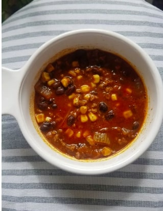

Calico beans with beaf and bacon

Description
These hearty beans full of ground beef and bacon are great for a picnic or potluck.
Ingredients
- ½ pound bacon
- 1 pound lean ground beef
- 1 onion, chopped
- 1 (15 ounce) can lima beans, drained
- 1 (15 ounce) can kidney beans, undrained
- 1 (15 ounce) can pork and beans
- 2 tablespoons ground dry mustard
- ½ cup brown sugar
Steps
- Preheat oven to 350 degrees F (175 degrees C).
- Place bacon in a large, deep skillet. Cook over medium-high heat until evenly brown. Drain, crumble and set aside. In the same skillet, crumble ground beef and cook over medium-high heat 2 minutes. Mix in onion and continue to saute until beef is browned and onion is golden. Drain grease if desired.
- In a 4 quart casserole dish, mix together bacon, beef, onion, lima beans, kidney beans, pork and beans, dry mustard, brown sugar, salt, and pepper. Cover dish and bake in preheated oven for 45 minutes, until bubbly.